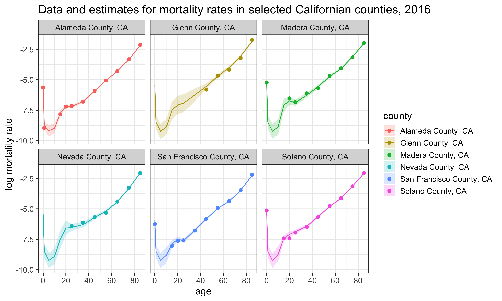
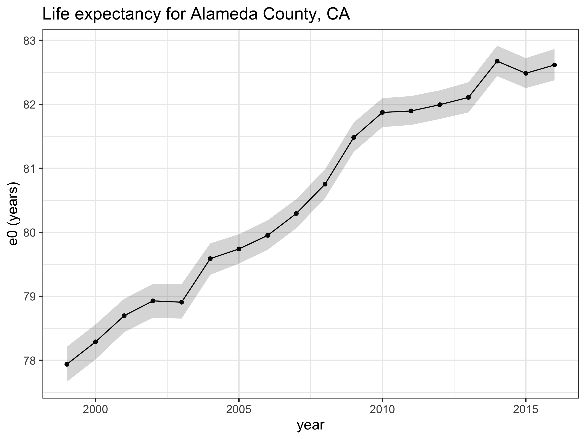

county code age_group year deaths pop age mx
1 Alameda County, CA 6001 < 1 year 1999 110 19336 0 0.005688871
2 Alameda County, CA 6001 < 1 year 2000 104 19397 0 0.005361654
3 Alameda County, CA 6001 < 1 year 2001 133 22044 0 0.006033388
4 Alameda County, CA 6001 < 1 year 2002 91 21316 0 0.004269094
5 Alameda County, CA 6001 < 1 year 2003 97 21091 0 0.004599118
6 Alameda County, CA 6001 < 1 year 2004 111 20339 0 0.005457495Estimating age-specific mortality rates at the subnational level
Introduction
This is a tutorial on estimating age-specific mortality rates at the subnational level, using a model similar to that described in our Demography paper. There are four main steps, which will be described below:
- Prepare data and get it in the right format
- Choose and create a mortality standard
- Fit the model
- Analyze results from the model
A few notes on this particular example:
- I’ll be fitting the model to county-level mortality rates in California over the years 1999 to 2016. These are age-specific mortality rates for both sexes for the age groups <1, 1-4, 5-9, 10-14, 15-19, 20-24, 25-34, 35-44, 45-54, 55-64, 65-74, 75-84, 85+.
- Data on deaths and populations are publicly available through CDC WONDER. However, age groups where death counts are less than 10 are suppressed, and so for some age group/year/county combinations, there are missing data. Also note that there are no observations for any years for two counties, Sierra and Alpine.
- All analysis was done in R and the model was fit using JAGS. Other MCMC options such as Stan, WinBUGS or PyMC would probably work just as well.
All the code to reproduce this example can be found here: https://github.com/MJAlexander/states-mortality/tree/master/CA_county_example. Please see the R file CA.R in the code folder.
A note on modeling: there are many adaptions that can be made to this broad model set up, which may be more suitable in different situations. When estimating mortality in your own work, make sure to undergo a suitable validation process to see that the estimates are sensible, and fully test alternatives.
1. Preparing the data
The first step is to obtain data on death counts and population by age (and potentially sex) groups, and get it in the right format for modeling purposes. Note that you need counts, not just the mortality rates, as inputs into the model.
In this example, I downloaded data on death and population counts by county (the files CA.csv and CA_pop.csv in the data folder). Because these two data sources had different age groups available, I had to a bit of cleaning up to make sure everything was consistent. The resulting deaths data has the following form:
For the JAGS model, the data has to has to be in the form of an array. The notation used throughout the JAGS model is referring to age \(x\), time \(t\), area \(a\) and state \(s\). So both the deaths and population data need to be in the form of an array with dimensions age x time x area x state. I did this in quite an ugly way combining loops and tidyverse, which probably isn’t the most elegant way, but it works :) The resulting deaths data for the first county (Alameda) looks like this:
y.xtas[,,1,1] [,1] [,2] [,3] [,4] [,5] [,6] [,7] [,8] [,9] [,10] [,11] [,12] [,13]
[1,] 110 104 133 91 97 111 105 91 105 89 77 94 79
[2,] 17 22 15 13 13 16 10 21 18 15 18 12 12
[3,] 14 14 16 15 10 13 NA 15 11 NA NA NA NA
[4,] 16 19 17 13 19 13 22 13 NA 15 13 11 11
[5,] 48 36 41 57 51 50 51 66 54 47 43 51 34
[6,] 71 71 83 76 89 75 72 94 99 89 89 73 69
[7,] 194 193 179 195 187 201 171 194 167 169 156 120 173
[8,] 426 435 401 396 419 345 343 337 329 310 292 253 262
[9,] 779 799 783 836 827 825 812 758 768 735 708 629 677
[10,] 1078 1069 1009 1066 1130 1064 1084 1106 1211 1176 1141 1159 1319
[11,] 1779 1645 1531 1517 1445 1452 1362 1385 1368 1341 1333 1348 1353
[12,] 2748 2792 2841 2714 2719 2517 2512 2395 2316 2271 2103 2088 2137
[13,] 2629 2687 2720 2617 2748 2586 2782 2831 2874 2974 2922 3064 3041
[,14] [,15] [,16] [,17] [,18]
[1,] 75 86 76 75 71
[2,] 15 10 11 NA 10
[3,] NA NA NA NA NA
[4,] NA 12 NA NA NA
[5,] 49 43 38 46 37
[6,] 84 74 87 82 77
[7,] 163 159 180 178 214
[8,] 263 260 261 279 273
[9,] 675 647 549 598 603
[10,] 1283 1273 1301 1291 1274
[11,] 1528 1599 1624 1698 1750
[12,] 2019 2040 2015 2059 2137
[13,] 3253 3376 3276 3476 34622. Preparing the mortality standard
The other main inputs to the mortality model are the principal components derived from the mortality standard. Which mortality standard you choose to derive your principal components from depends on your specific problem. In the case of this example, I decided to use state-level mortality schedules for all states in the US over the period 1959–2015. These data are available through the United States Mortality Database.
The code I used to create the principal components using these data are here. Again note that for this particular example, I had to alter the data so that the age groups were consistent.
Once the principal components are obtained, they can be input into the model based on being in a matrix with dimension age x component. Note that the model fitted here uses three components. The inputs are below:
V1 V2 V3
1 0.20853194 0.630214628 0.287652535
2 0.35264710 0.300256735 -0.162737410
3 0.38660035 0.252316283 -0.287091193
4 0.38118755 -0.017848623 -0.403974070
5 0.32970586 -0.252356450 -0.352528704
6 0.31523511 -0.359905277 -0.025726734
7 0.30949609 -0.383953991 0.306658736
8 0.28246520 -0.191162991 0.454141280
9 0.24350004 -0.003865125 0.401059537
10 0.20458378 0.099035872 0.221135219
11 0.16646980 0.139019421 0.085803340
12 0.12715285 0.116507026 0.052966450
13 0.09332889 -0.169677526 -0.0040893633. Running the model
Now that we have the required data inputs, the JAGS model can be run. You need to create an input list of all the data required by JAGS, and specify the names of the parameters you would like to monitor and get posterior samples for.
jags.data <- list(y.xtas = y.xtas,
pop.xtas = pop.xtas,
Yx = pcs,
S = 1, X= length(age_groups), T = length(years),
n.a=length(counties), n.amax=length(counties), P=3 )
parnames <- c("beta.tas", "mu.beta" ,"sigma.beta", "tau.mu", "u.xtas", "mx.xtas")Once that is done, the model can be run. Please look at the model text file in reference to the paper to see which variables refer to what aspects. The notation used in the JAGS model is (I hope) fairly consistent with the notation in the paper.
mod <- jags(data = jags.data,
parameters.to.save=parnames,
n.iter = 30000,
model.file = "../code/model.txt")This may take a while to run, so be patient. You can look at a summary of the model estimates like this:
mod$BUGSoutput$summaryNote that the values of all Rhats should be less than 1.1, otherwise the estimates are unreliable and should not be interpreted. If you have Rhats that are greater than 1.1, try running the model for more iterations.
# check all Rhats are less than 1.1
max(mod$BUGSoutput$summary[,"Rhat"])4. Extract results
Now that we have model estimates, we need to be able to extract them and look at the results. You can get the posterior samples for all parameters by extracting the sims.array from the model object:
mcmc.array <- mod$BUGSoutput$sims.arrayUnless you’re interested in the underlying mechanics of the model, you’re probably most interested in the estimates for the age-specific mortality rates, mx.xtas. The sims.array has dimensions number iterations (default 1,000) x number of chains (default 3) x number of parameters. So to look at the posterior samples for mx.xtas[1,1,1,1] for example, you would type:
mcmc.array[,,"mx.xtas[1,1,1,1]"]Once the posterior samples are obtained, these are used to obtain the best estimate of the parameter (usually the median) and Bayesian credible intervals. For example, a 95% credible interval can be calculated by getting the 2.5th and 97.5th quantile of the posterior samples. Below is a chart that illustrates some of the age-specific mortality estimates for six Californian counties in 2016. Code to generate this chart is included in CA.R.

Once the estimate for mortality rates are extracted, you can also convert these into other mortality measures, such as life expectancy, using standard life table relationships. The code on GitHub includes a function which derives life expectancy from the mx’s, called derive_ex_values. This function is loaded in at the beginning of the CA.R. Code to generate this chart is included at the end of CA.R.

Summary
This document gives a brief introduction into the practicalities of fitting a Bayesian subnational mortality model in R using JAGS. There are many different layers to the model and assumptions associated with it, so it is recommended that the user of this code and model is familiar with the paper and the assumptions outlined in it. Good luck! :)